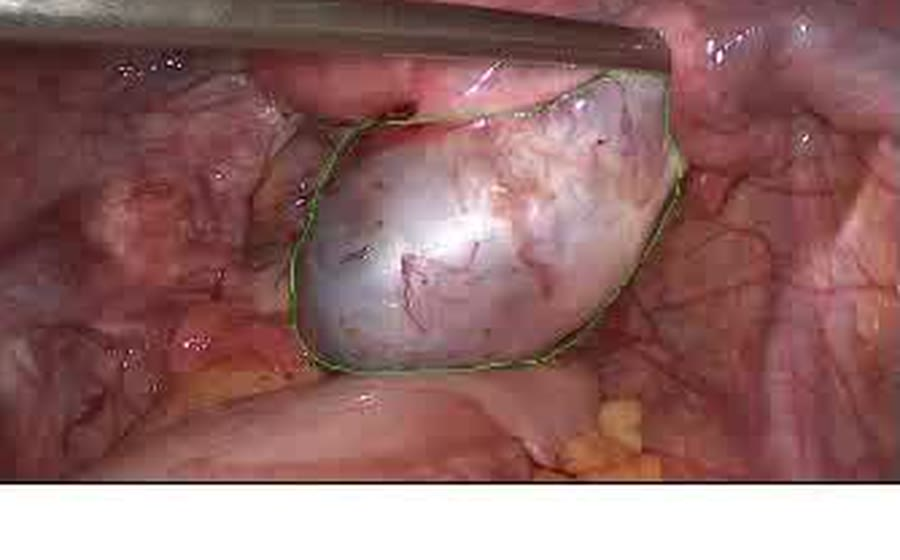
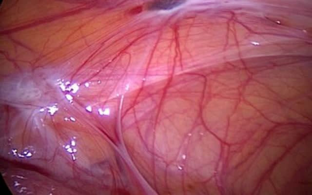

1690Described
First written down.
Daniel Shroen, a German physician, describes ulcers in and around the uterus that match what we now call endometriosis.
Pain that gets brushed off is still pain.
Turn what you feel into a clear conversation for your next appointment.
Emenla is an iPhone app. It is not on the App Store yet.
Pain that gets brushed off is still pain. Emenla helps you keep a record of it, in your own words.
Turn what you feel into a clear conversation for your next appointment.
Emenla is an iPhone app. It is not on the App Store yet.
Be told the day it opensTell it in your own words. We'll find the clinical name for it.
You write what you feel. Emenla matches it to the term a clinician would recognise, shows you where that term comes from, and keeps your own sentence printed right beside it. A clinician can check the match at a glance. So can you.
Emenla names symptoms in clinical language. It never names a condition.
It hurts when I go to the bathroom, especially during my period.
Dyschezia
pain on defecation
Period pain. Menstrual cramps.
Dysmenorrhoea
painful menstruation
ICD-10 N94.6
Painful sex.
Dyspareunia
pain during or after intercourse
ICD-10 N94.1
Press and hold. Your sentence writes itself, and the clinical term appears beside it. Let go early and it un-writes.
Press and hold. Let go early and it un-writes.
The word "cyclical" is never taken from a sentence. Emenla only uses it after counting your logged days against your logged period starts. Concepts come from your words. Qualifiers come from your data.
Other apps turn a symptom log into a document for a clinician. What Emenla does differently is print your own sentence beside every clinical term, with its source, and refuse to say "cyclical" until it has counted.
A few words is enough. Say it, or type it.
One clean page for your appointment.
Your cycle, counted. Never forecast.
Food, built carefully. No restriction.
Gentle movement. It cannot score you.
Also inside: Community, voices from real women, told properly, with a stated position on what Emenla will and won't do with other people's stories. And Learn, plain-language articles on the condition.
Type or speak. "Bad cramps, back pain, stayed in bed" is a complete entry. Add severity and a period start if you want to. Skip everything else.
Counts from your own entries. Which days, how often, how bad, and how that lines up with your logged periods. Nothing forecast, nothing scored, no streaks.
A one-page summary in clinical terms, with your own words printed beside each one, for you to bring to your appointment. What it is for is you feeling clear about your own body. Whether a clinician reads it is up to them.
One page. Your words, their words, the dates.
Three centuries from the first description to a guideline that says your symptoms are enough.
Daniel Shroen, a German physician, describes ulcers in and around the uterus that match what we now call endometriosis.
Karl von Rokitansky in Vienna identifies tissue like the lining of the womb growing where it should not.
John Sampson coins the word endometriosis and proposes that menstrual blood flowing backwards seeds the tissue. It is still the leading theory.
The Endometriosis Association is founded in Milwaukee, the first patient-led organisation, and starts collecting women's own accounts.

ESHRE publishes its first guideline on diagnosing and treating endometriosis, updated in 2014 and 2022.

The UK guideline NG73 says to suspect endometriosis when a woman reports chronic pelvic pain, period pain that affects daily life, or pain during or after sex.
ACOG's guideline says a clinical diagnosis from symptoms, history and an examination is enough to begin treatment. Surgery is not required first.
Studies still put the delay between first symptoms and a diagnosis at four to eleven years. Emenla is for the years in between.
There is no account and nothing to sign into. Your entries are not uploaded to a server, not sold, and not shared with anyone.
The World Health Organization estimates it affects roughly 10 percent of women and girls of reproductive age worldwide, which is around 190 million people. WHO fact sheet on endometriosis
Studies have found the delay between first symptoms and a diagnosis is commonly between four and eleven years, and a large part of that delay is people not being believed. ACOG, February 2026 · scoping review, 2024
The European Society of Human Reproduction and Embryology's 2022 guideline says patients are encouraged to keep a diary of their symptoms to support the history-taking process. ESHRE endometriosis guideline, 2022
In March 2026, the American College of Obstetricians and Gynecologists published a clinical practice guideline saying that a clinical diagnosis, made from your symptoms, your history and a physical examination, is enough for a clinician to begin treatment. Laparoscopy is not required first. ACOG Clinical Practice Guideline No. 11, March 2026
None of this is a claim about what Emenla does for your health. It is why a clear record, kept by you, in your words, is worth having.
Your words, unchanged, beside the clinical term.
Free, always
Logging cannot be put behind a paywall. There is no account and no server, so there is nothing to lock. This is how Emenla is built, not a promise about the future.
$34.99 a year, or $6.99 a month
One tier. Bought through Apple's in-app purchase, refunded through Apple's process.
No, and it never will. Emenla names symptoms in clinical language and keeps your words beside each term. Whether those symptoms add up to a condition is a conversation for you and a clinician.
You will lose them unless you export first. There is no account and no cloud copy, on purpose. Export before you switch.
No. There are no streaks anywhere in Emenla and there never will be. Reminders are optional and never leave your phone.
One message, on the day Emenla is on the App Store. Nothing else.